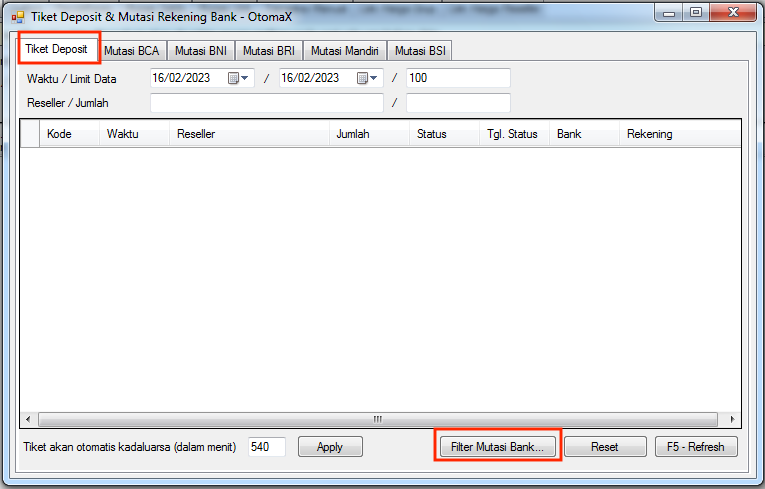
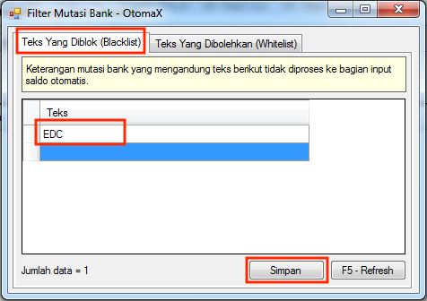

Filter Mutasi Bank
Sekarang lagi marak modus kejahatan dengan memanfaatkan kerentanan sistem perbankan dan Tiket Deposit yang merugikan pengelola server pulsa. Untuk menjawab tantangan tersebut, OtomaX menghadirkan fitur baru yaitu Filter Mutasi Bank.
Cara kerja fitur ini, OtomaX akan tetap membaca mutasi bank, namun apabila di dalamnya terdapat kalimat tertentu, saldo tidak akan diinput secara otomatis, diperlukan input secara manual setelah dilakukan pengecekan lebih mendalam.
Berikut ini langkah mengaktifkan fitur tersebut:
- Pastikan edisi OtomaX Anda minimal edisi Standard, jika belum silahkan upgrade dahulu klik disini.
- Pastikan telah menggunakan v4.1.3, jika belum silahkan update dahulu klik disini.
-
Di OtomaX, masuk menu Tiket Deposit -> klik tombol Filter Mutasi Bank

-
Masukkan kalimat tertentu, misalnya EDC seperti tampak di gambar di bawah, kemudian klik tombol
Simpan. Ini artinya saldo tidak akan diinput secara otomatis manakala didalam mutasi bank terdapat
kalimat
EDC.

Anda dapat menambahkan kalimat lain di baris selanjutnya sesuai kebutuhan Anda.
- Tutup dan buka kembali OtomaX.
- Selesai.